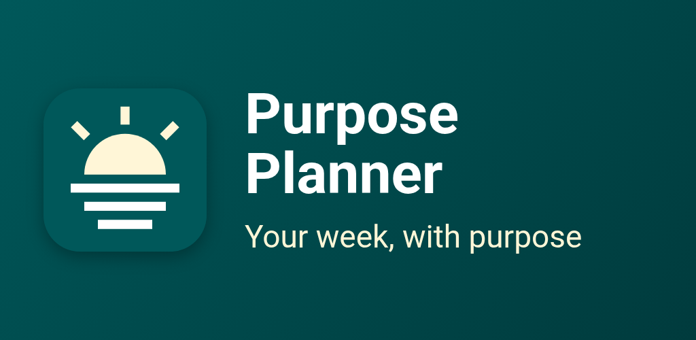
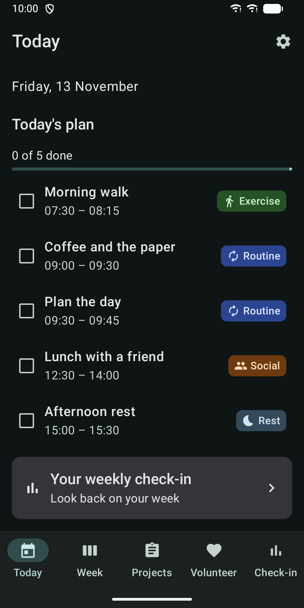
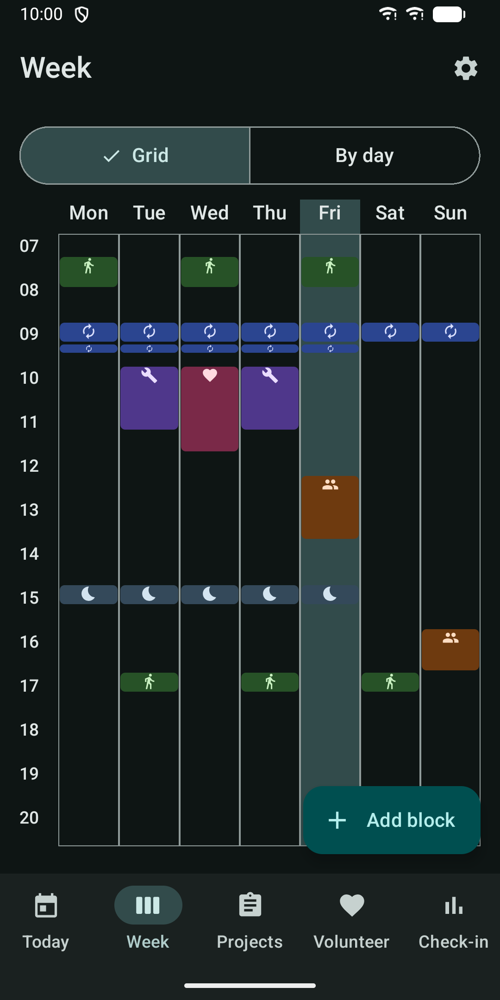
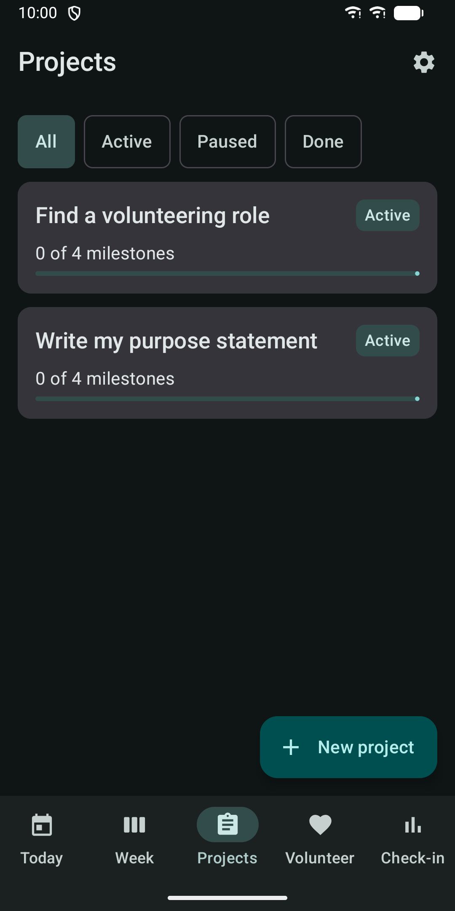
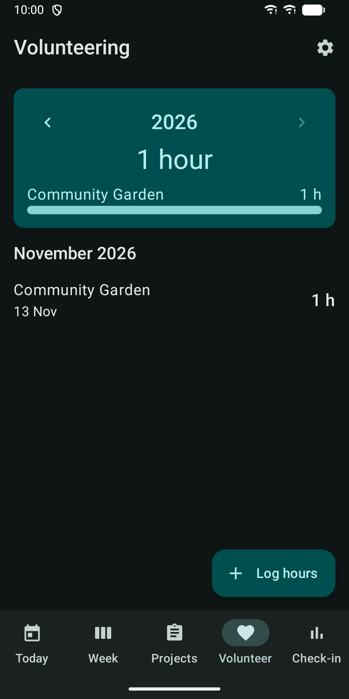
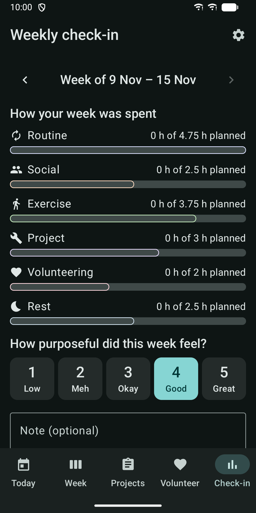

Purpose Planner: Retirement
Plan your week in retirement: routines, projects, volunteering and check-ins.






About
Purpose Planner helps you give your retirement a rhythm that feels like yours. Whether you have just retired or are getting ready to, you build a simple weekly plan and keep track of what matters to you. WHAT YOU CAN DO Today: see the day's plan at a glance and tick off each block as you go. Pre-retirees see the days left until their retirement date. Retirees see which day of retirement it is. Week: build a weekly template of recurring time blocks. Each block has a title, a category (Routine, Social, Exercise, Project, Volunteering or Rest), days and times. View your week as a grid or day by day. Projects: keep hobby, learning and home projects with milestones and a status of active, paused or done. Volunteering: log organisation, date, hours and an optional note. See your total hours for the year and per organisation. Weekly check-in: see how your week was spent across categories, give an optional score from 1 to 5 for how purposeful it felt, and write a note. Past check-ins stay in a list. Starter template: begin with "First 90 days of retirement", a gentle weekly rhythm with example blocks and projects. You can change everything afterwards. Reminders: optional notifications when a time block starts and on Sunday evening for your check-in. Each can be switched off. Notifications never show what you planned. Widget: a home screen widget with today's plan and your countdown or day of retirement. MADE FOR EASY READING Large text, high contrast, large buttons, light and dark themes that follow your phone, and support for screen readers. Works on phones and tablets. YOUR DATA STAYS WITH YOU No account, no server, no ads and no analytics. The app has no internet permission. Everything is stored on your device. You can export a backup file, optionally protected with a password, and restore it later through the system file picker. PRO UNLOCK The core planner is available to everyone. A one-time Pro purchase through Google Play adds: - PDF export of your plan, check-ins and volunteering - Extra home screen widgets: week, projects and volunteering hours - Colour themes - Four more starter templates Pro is not a subscription. If you bought it before, use Restore purchase in Settings. The app is in English. Minimum Android version: 8.0. Questions or feedback: apps@schimpf.es